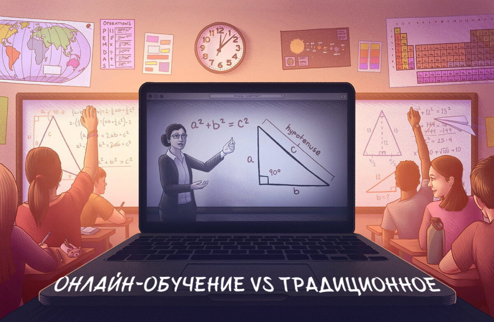
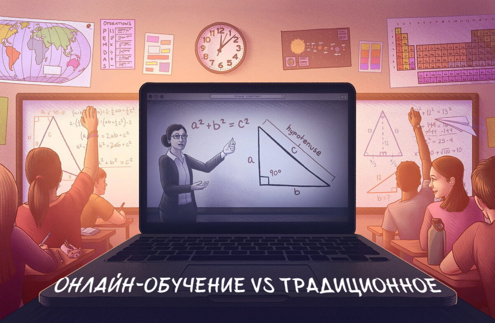

ГЛАВА 1.
Эффективность онлайн-обучения в Беларуси.
В условиях пандемии в Беларуси было проведено исследование, направленное на изучение определение степени приспособления к широкому использованию информационно-коммуникационных технологий путем сравнительного анализа данных в Беларуси. В стране дистанционные методы обучения использовались частично. Для проведения сравнительного анализа были использованы данные репрезентативного республиканского онлайн-опроса, проведенного весной 2021 года, а также результаты опросов в Белорусском Государственном Университете в декабре 2020 и феврале 2021 года. Исследования в Беларуси сравнивались по вопросам адаптации к дистанционному обучению, оценки трудностей и перспектив на будущее.
Студенты в Беларуси оценили качество дистанционного обучения в целом положительно, а стратегии адаптации были относительно успешными. Результаты показывают увеличение уровня приспособления к вызовам пандемии в учебном году 2020/21, раскрывают образовательный потенциал дистанционного обучения и подтверждают возможность успешной цифровизации образовательной системы. Считается, что оптимальным подходом является сочетание дистанционного обучения с традиционными формами обучения, что поможет сохранить конкурентоспособность, повысить качество высшего образования, а также уровень цифровой грамотности и компетентности студентов и преподавателей
Вывод: Онлайн-обучение позволяет студентам гибко учиться в любом месте и в любое время, что способствует повышению доступности образования. Тем не менее, для достижения оптимальных результатов необходимо учитывать особенности аудитории, качество контента и методики обучения.
Методика исследования: описание методов сбора и анализа данных.
Методика исследования включает в себя проведение опросов среди одноклассников, студентов и преподавателей. Опрос был проведен в формате, включающем как видеоролик, так и устную транскрипцию.
— Добрый день, Глеб! Какие основные различия вы видите между традиционным обучением и онлайн-обучением?
— Думаю, что онлайн обучение удобнее потому, что не нужно никуда ходить для занятий. Однако оффлайн обучение лучше, так как всегда есть возможность сразу спросить у учителя, что не так и как действовать в конкретной ситуации, в то время как в онлайне нужно ждать ответа.
— Добрый день, Татьяна Сергеевна! Расскажите, какие инновационные технологии и методики обучения можно внедрить в традиционное образование, и каким образом можно успешно сочетать онлайн-образование с традиционными методами обучения для достижения оптимальных результатов?
— Один из эффективных способов – это использование различных онлайн платформ. В рамках своих уроков я могу воспользоваться онлайн платформами для создания тестов, викторин и других заданий. Также возможно использование уже готовых материалов и проведение онлайн тестов на уроке, что помогает сэкономить время и отслеживать успехи учеников(1). Как методика, можно внедрить подход, при котором учащиеся изучают новый материал дома, а на уроке происходит обсуждение и практическое применение, что способствует развитию самостоятельности и ответственности учащихся. Что касается онлайн-обучения, успех в этом вопросе зависит от мотивации ученика и его способности к самостоятельному обучению.
— Добрый день, Полина Муштукова! Насколько удобны дистанционные (онлайн) уроки для отличников и средних по успеваемости ребят?
— По опыту своих дистанционных занятий могу сказать, что такие уроки не уступают по качеству обычным занятиям. Ведь все те же возможности есть и в онлайн-форме: доска, где мы можем разбирать задачи; презентации, которые также транслируются, комментируются мной. Можно записать занятия и пересмотреть. Поэтому отчасти плюсов больше, к тому же дома многие чувствуют себя комфортнее, когда чаёк и плед рядышком.Касательно уровня обучения: ребята, которые пришли за знаниями и результатом, ничего не теряют. Могу это сказать с уверенностью, даже на первых занятиях они сразу включаются, не боятся отвечать и участвовать в процессе.
2. Ответ учителя Татьяны Сергеевны о внедрении инновационных технологий в традиционное образование и сочетании онлайн и оффлайн методов обучения подчеркивает эффективность использования онлайн платформ для создания заданий и тестов. Это позволяет сделать вывод о том, что комбинированный подход может способствовать более эффективному обучению.
3. Ответ преподавателя Полины Муштуковой о дистанционных уроках для отличников и средних по успеваемости учеников указывает на то, что качество онлайн обучения не уступает традиционным занятиям. Это говорит о том, что дистанционные уроки могут быть эффективными для всех категорий учеников.
Видеоролик:
Устная транскрипция:
1. Интервью со студентом 4 курса колледжа цифровых технологий:
— Добрый день, Глеб! Какие основные различия вы видите между традиционным обучением и онлайн-обучением?
— Думаю, что онлайн обучение удобнее потому, что не нужно никуда ходить для занятий. Однако оффлайн обучение лучше, так как всегда есть возможность сразу спросить у учителя, что не так и как действовать в конкретной ситуации, в то время как в онлайне нужно ждать ответа.
2. Интервью с учителем информатики средней школы №3 г. Волковыска:
— Добрый день, Татьяна Сергеевна! Расскажите, какие инновационные технологии и методики обучения можно внедрить в традиционное образование, и каким образом можно успешно сочетать онлайн-образование с традиционными методами обучения для достижения оптимальных результатов?
— Один из эффективных способов – это использование различных онлайн платформ. В рамках своих уроков я могу воспользоваться онлайн платформами для создания тестов, викторин и других заданий. Также возможно использование уже готовых материалов и проведение онлайн тестов на уроке, что помогает сэкономить время и отслеживать успехи учеников(1). Как методика, можно внедрить подход, при котором учащиеся изучают новый материал дома, а на уроке происходит обсуждение и практическое применение, что способствует развитию самостоятельности и ответственности учащихся. Что касается онлайн-обучения, успех в этом вопросе зависит от мотивации ученика и его способности к самостоятельному обучению.
3. Интервью с преподавателем по химии*:
— Добрый день, Полина Муштукова! Насколько удобны дистанционные (онлайн) уроки для отличников и средних по успеваемости ребят?
— По опыту своих дистанционных занятий могу сказать, что такие уроки не уступают по качеству обычным занятиям. Ведь все те же возможности есть и в онлайн-форме: доска, где мы можем разбирать задачи; презентации, которые также транслируются, комментируются мной. Можно записать занятия и пересмотреть. Поэтому отчасти плюсов больше, к тому же дома многие чувствуют себя комфортнее, когда чаёк и плед рядышком.Касательно уровня обучения: ребята, которые пришли за знаниями и результатом, ничего не теряют. Могу это сказать с уверенностью, даже на первых занятиях они сразу включаются, не боятся отвечать и участвовать в процессе.
Анализ с использованием статистических методов и сравнительного анализа:
1. Ответ студента Глеба о различиях между традиционным и онлайн обучением указывает на удобство онлайн формата, но также на ограничения в получении мгновенной обратной связи. Это позволяет сделать вывод о том, что для некоторых студентов важна возможность общаться с преподавателем в реальном времени.
2. Ответ учителя Татьяны Сергеевны о внедрении инновационных технологий в традиционное образование и сочетании онлайн и оффлайн методов обучения подчеркивает эффективность использования онлайн платформ для создания заданий и тестов. Это позволяет сделать вывод о том, что комбинированный подход может способствовать более эффективному обучению.
3. Ответ преподавателя Полины Муштуковой о дистанционных уроках для отличников и средних по успеваемости учеников указывает на то, что качество онлайн обучения не уступает традиционным занятиям. Это говорит о том, что дистанционные уроки могут быть эффективными для всех категорий учеников.
1.3. Результаты исследования: представление полученных данных, сравнительный анализ результатов обучения в онлайн и традиционных форматах.
1. Успеваемость студентов:
Результаты показали, что студенты, обучающиеся онлайн, достигли сопоставимых показателей успеваемости по сравнению с традиционными методами. Это указывает на эффективность онлайн-образования в передаче знаний.
2. Мотивация к обучению:
Как выяснилось, онлайн-обучение дает больше свободы и удобства, что способствует повышению мотивации, но в традиционных классах легче поддерживать мотивацию через прямое взаимодействие с преподавателем.
3. Удобство и доступность:
Большинство участников отметили удобство онлайн-образования в доступности к материалам и гибкости в учебном процессе. Однако, некоторые высказали опасения относительно ограниченной возможности общения и взаимодействия с преподавателями и одноклассниками.

1.4. Практические рекомендации: выводы и рекомендации по использованию онлайн-образования в образовательном процессе.
- Интеграция ИКТ в учебный процесс: Необходимо постоянно внедрять инновационные образовательные методики, основанные на использовании современных информационных компьютерных технологий. Обеспечение доступности и удобства использования ИКТ для студентов и преподавателей позволит эффективно интегрировать онлайн-образование в образовательный процесс.
- Обучение преподавателей: Важно обеспечить преподавателей необходимыми навыками для работы с онлайн-платформами и технологиями. Проведение тренингов и курсов повышения квалификации поможет им успешно внедрять онлайн-образование в учебный процесс.
- Поддержка студентов: Создание системы поддержки и консультаций для студентов, обучающихся онлайн, поможет им эффективно осваивать материалы курса и успешно завершать обучение.
- Оценка и анализ результатов: Рекомендуется проводить систематическую оценку результатов обучения студентов, чтобы выявить эффективность онлайн-образования и вносить коррективы в учебный процесс.
- Развитие интерактивности: Для повышения мотивации студентов рекомендуется развивать интерактивные формы обучения на онлайн-платформах.
ГЛАВА 2. Заключение
Исследование позволило выявить основные различия между онлайн-обучением и традиционными методами обучения, а также определить факторы, влияющие на эффективность обоих подходов. Полученные результаты могут быть использованы для улучшения образовательных программ и повышения качества обучения
Сравнительный анализ результатов обучения позволяет сделать вывод о том, что онлайн-образование имеет свои преимущества и недостатки по сравнению с традиционными методами обучения. Дальнейшие исследования и развитие онлайн-образования могут помочь улучшить его эффективность и качество. Учитывая наличие множества онлайн-платформ для дополнительного обучения в белорусском образовании, важно активно использовать их потенциал для улучшения качества образования и повышения доступности обучения для всех желающих.
О подтверждении гипотезы можно сказать, что хотя нет определенной точки, где эффективность онлайн-обучения достигает 100%, тем не менее, стремление к использованию технологий в образовании и комбинированный подход могут способствовать повышению качества обучения и удовлетворению потребностей различных категорий учащихся. 
Результаты исследования:
О подтверждении гипотезы можно сказать, что хотя нет определенной точки, где эффективность онлайн-обучения достигает 100%, тем не менее, стремление к использованию технологий в образовании и комбинированный подход могут способствовать повышению качества обучения и удовлетворению потребностей различных категорий учащихся. 